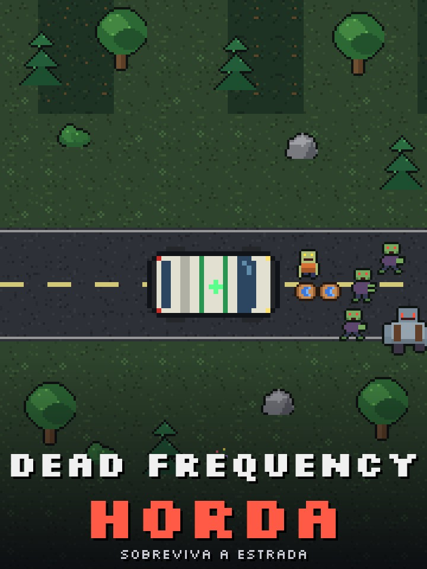
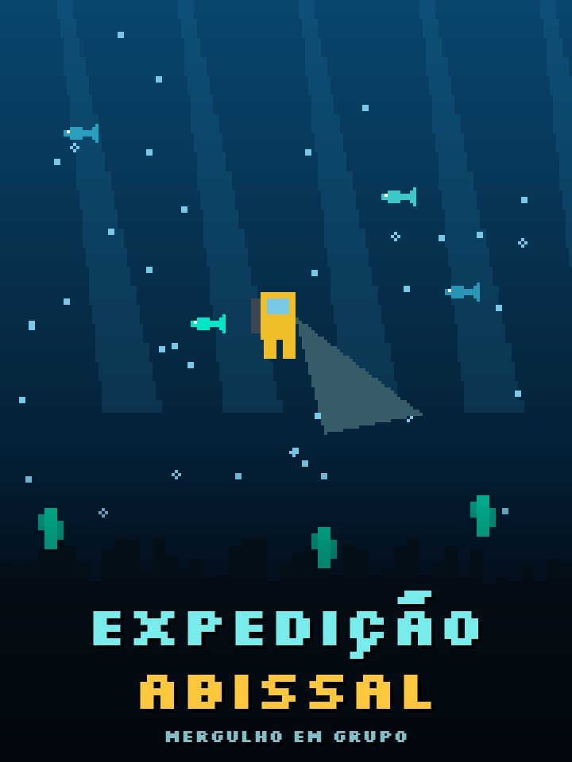
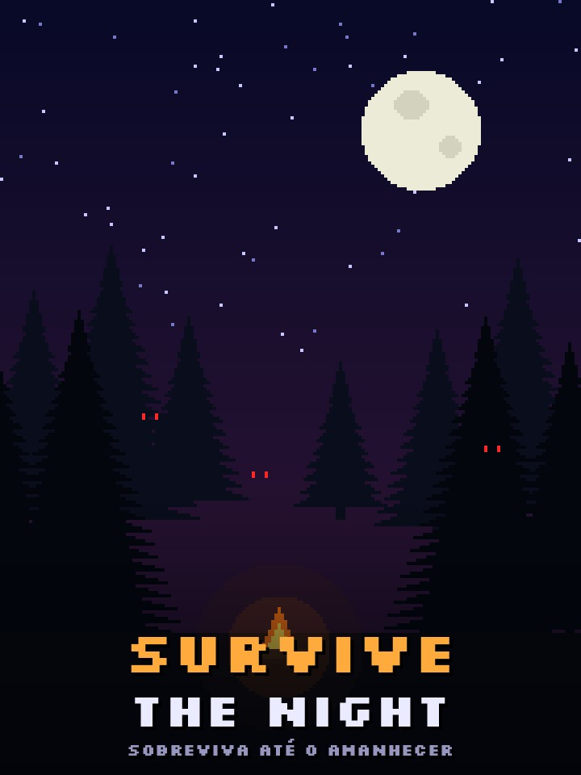
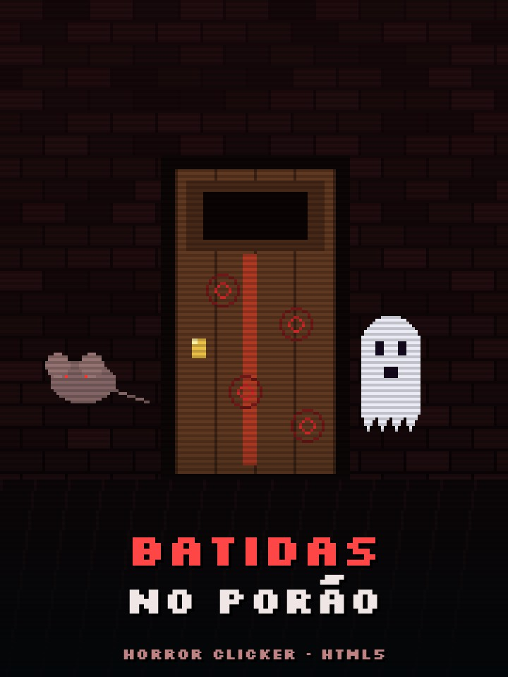

Alpha
AlphaDead Frequency
Uma cidade simulada na zona morta, em primeira pessoa e com cara de PlayStation 1. Escolha uma profissão, ouça a Rádio 96.6 e ajude a cidade a funcionar, sozinho ou com até 8 amigos.
Conhecer o jogoPixel art, cidades low-poly e muita bagunça controlada. Sempre quase prontos, sempre melhorando.
Ver os jogosJogos feitos em público, com versões para testar e novidades toda semana.
AlphaUma cidade simulada na zona morta, em primeira pessoa e com cara de PlayStation 1. Escolha uma profissão, ouça a Rádio 96.6 e ajude a cidade a funcionar, sozinho ou com até 8 amigos.
Conhecer o jogo
Em desenvolvimentoSpin-off 2D: dirija a van por estradas que mudam a cada partida, enfrente ondas de zumbis e compre upgrades permanentes na oficina.
Conhecer o jogo
Beta fechadoUm jogo de mergulho em grupo jogado pelo chat da Twitch: o chat vota na rota e decide a hora de voltar à superfície.
Ver detalhes
ProtótipoSobreviva ao ciclo de dia e noite: cace recursos, mate a fome e a sede, fabrique itens e resista aos inimigos que surgem à noite.
Ver detalhes
Jogue grátisProtótipo de horror clicker no navegador. Bata na porta, enfrente criaturas sala por sala e use os Ecos para ir mais fundo.
Ver detalhesO Quase Pronto Studios nasceu das lives e da vontade de transformar ideias do chat em jogos de verdade. Tudo é feito em público, com código aberto, versões beta para testar e launcher próprio.
Acompanhar na Twitch